This site provides you with a exclusive content on your best
anime characters,ranked from 5-1
He is known to be the strongest curse socerers born during the haein era.
He was and is so strong that he was nicknamed the king of curses
.He made a
deal with kengaku and currently in the anime he was reborned 1000yrs later living
inside yuji itadori's body.
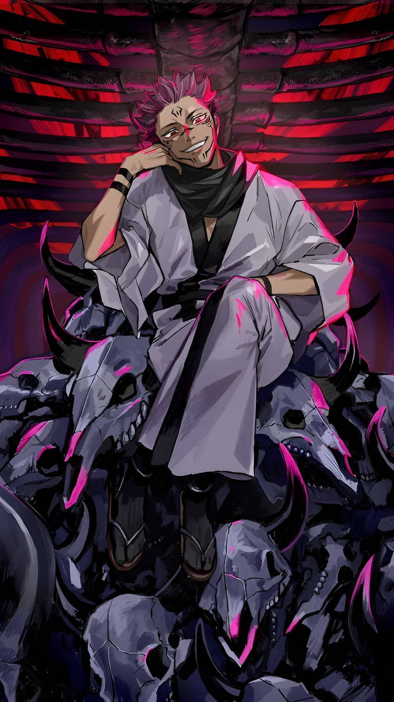
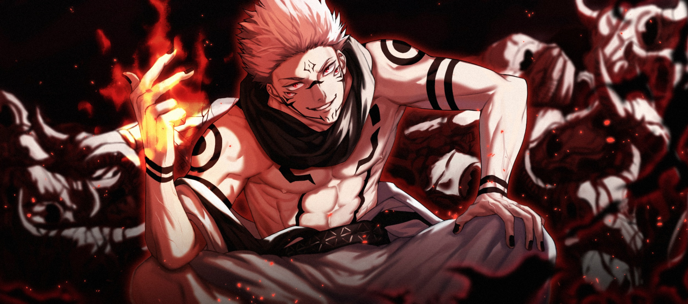
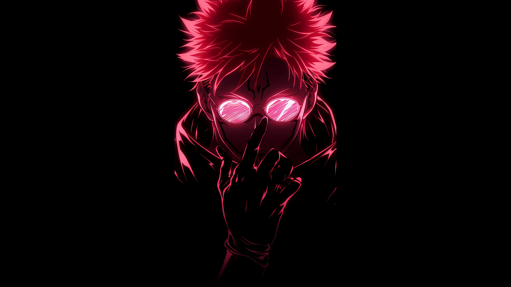
From an e-rank hunter to the strongest s-rank hunter in korea.Jinwoo with the help of the system which
allows him to be the only hunter capable of leveling up in his world, upgrade to the top .The system
is gradually preparing his body to be overtaken by the shadow monarch,ASBORN,.
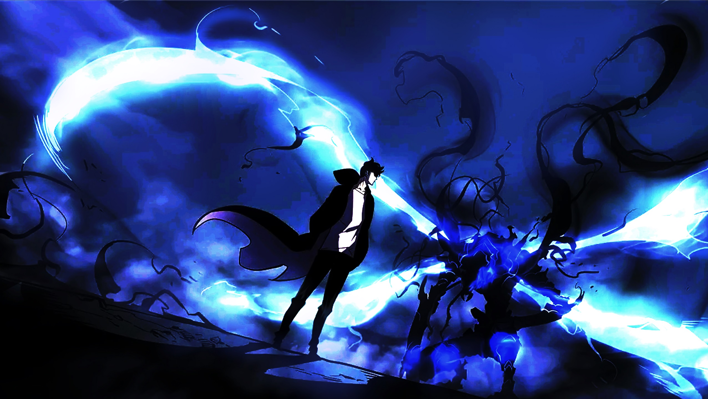
From a normal hardworking citizen,saitama workout nonstop ,eating only banana,he breaks the
bounds of the mortal body and achive the strength even greater than gods.He bocomes a c-rank hero
because of how dump he is.Gradually he move to b-rank and aims to find a waelthy opponent capable of
surviving more than one pounch from him.
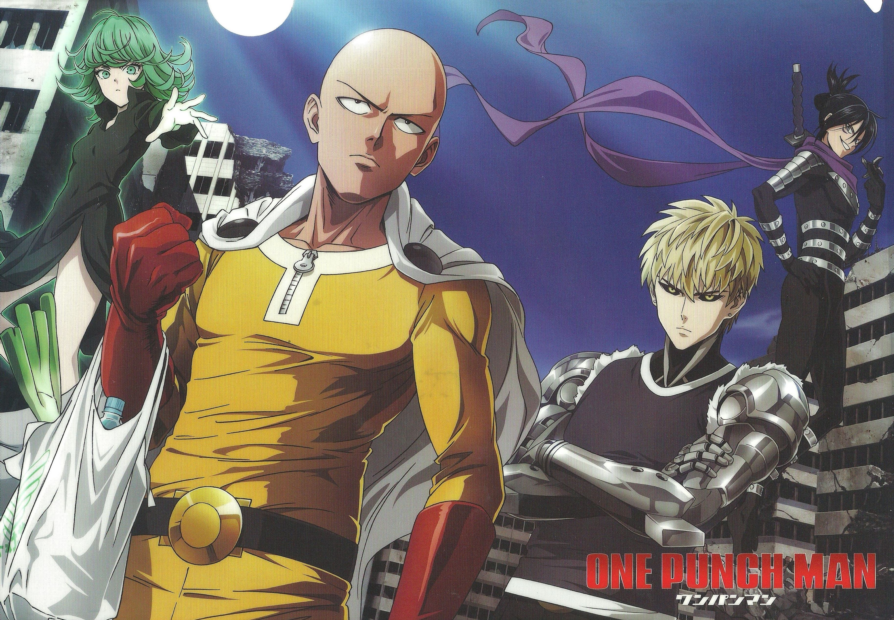
At the 2nd place is man bestowed with one of the greagtest abilities knwon to the jujutsu world,the limtless technique
which renders him litrally untouchable and the six eyes.This blessing gave him the potential to become one of
the greatest curse users in Japan.His power was too greate that just his birth shifted the balance of the world.
Even after inheriting these glories techniques ,Saturo Gojo trained himself to attain his outmost potential.
In his era, he is known as the strongest soucerer alive.
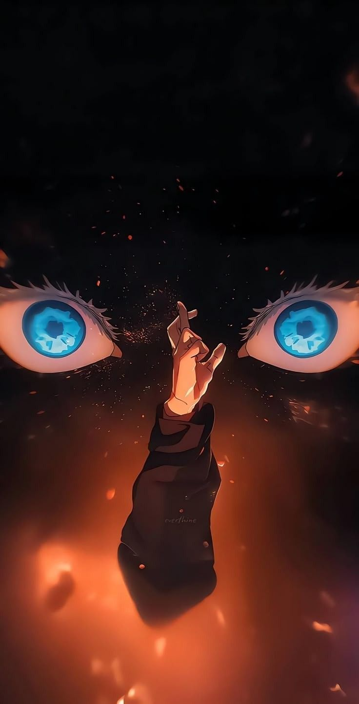
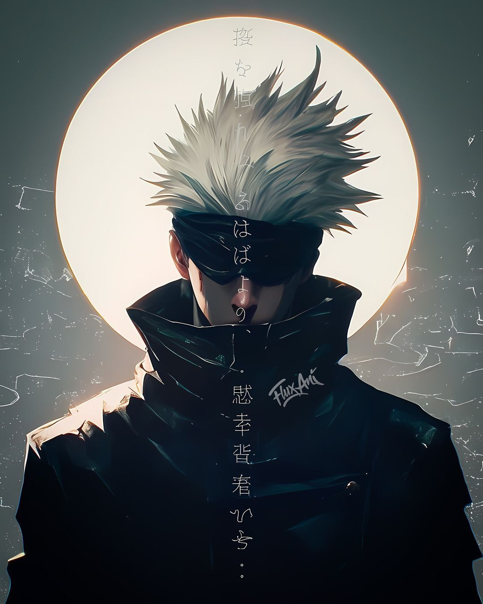
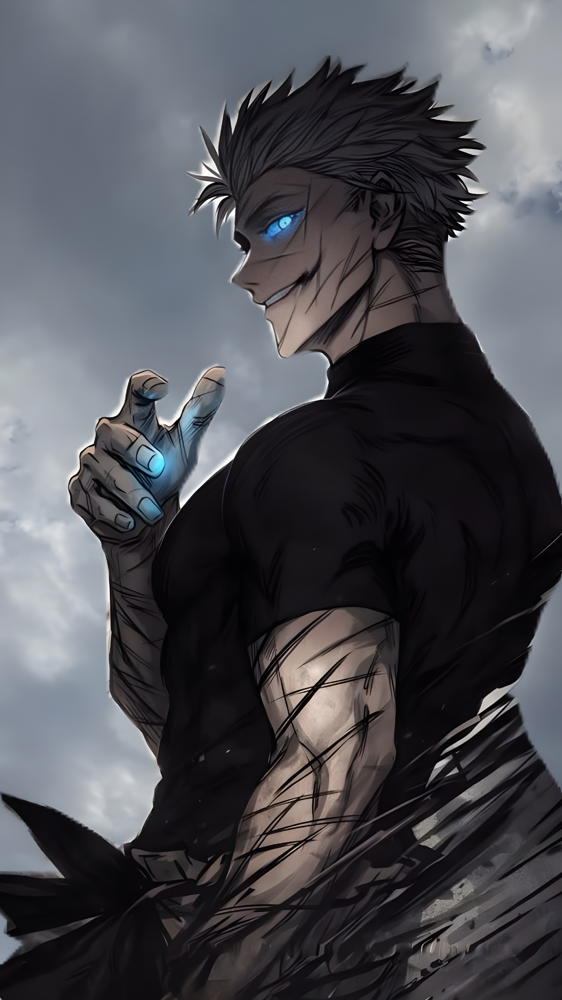
In the 1st place is the guy who ate the gumgum fruit.Luffy sweared to become king of the pirates with his rubber-like
abilities ,though his abilities was of low value in the begining,it turned out to be one of the four strongest abilities in
this anime ,this is the power of the sun god NIKA.Luffy builds his straw hat crew with a hope of fulfilling his dream.Also
he aquries the ability to use haki.Haki in union with his rubber-like powers luffy grows more stronger.He defeat many foes and
increased his bounty after each victory.
Currently,he has reached gear,which he himself confirmed to be his peak.Luffy intends to achieve his dream and will bring down
any barrier that stands in his way
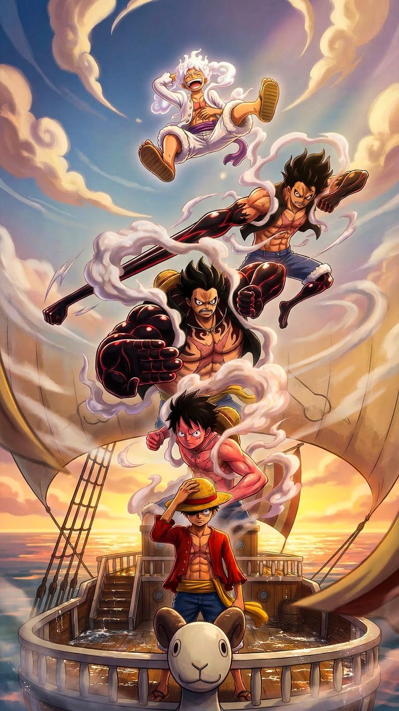
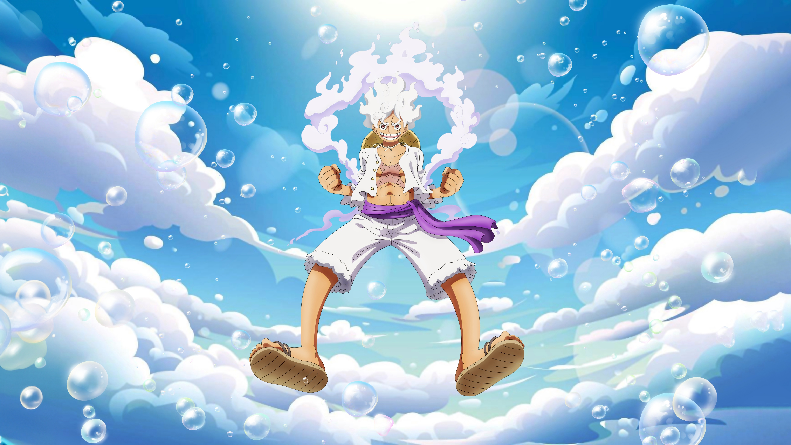
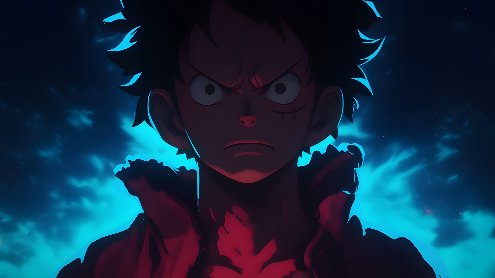
ANIRANK